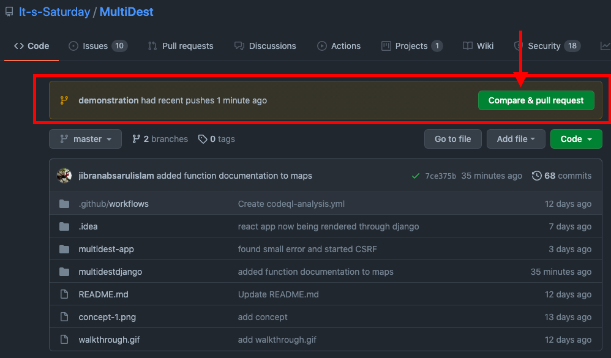
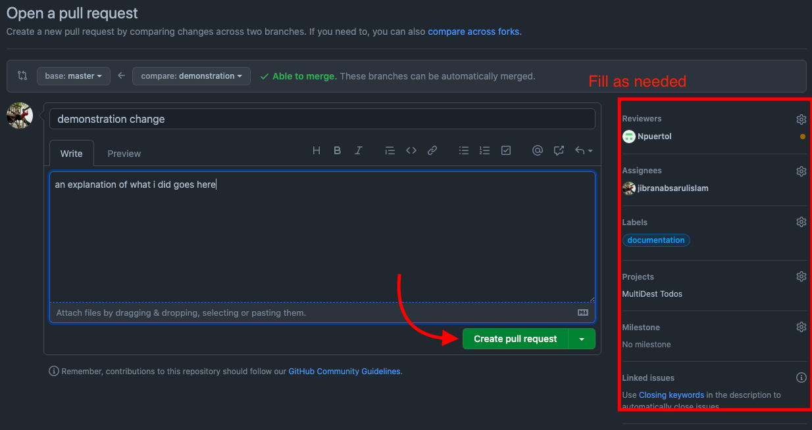

The following steps ensure that the main branch doesn't get mangled.
We need to:
- 1) Checkout a branch
- 2) Push to that branch
- 3) Create a pull request
- Using git checkout -b branchName
- This command will create a new branch for us to develop on.
- You can still git add . and git commit -m "your message" like you did before
- Using git push origin branchName
- This ensures that you're pushing your changes to the new branch.
- Creating a
pull request
- A pull request is a process where you 'propose' your changes to reviewers you assign.
- You will see a prompt on the GitHub project page
Result
(Also note the 2 branches)

Result pt. 2

- Profit $$$
Please drop a message in the discord if you need help ^^